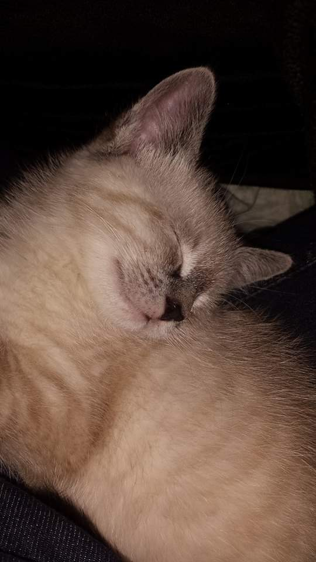
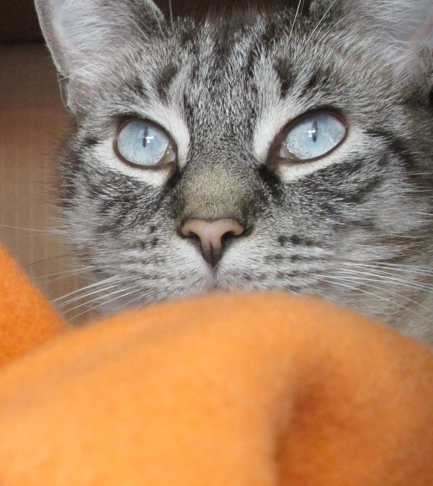

Edgar

Edgar is one of 3 kitties in the house, he is the oldest by a year and is 7 years old right now. He's a Siamese-Tabby with blue eyes.
- He loves to talk back because he's a sassy boy.
- Edgar sleeps on my pillow every night so my neck always hurts.
- He likes to be held for exactly 90 seconds before launching himself off of me.
- Edgar is very fond of screaming at the bedroom door less after being in the room for less than 30 seconds